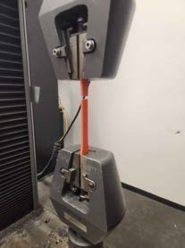

Project Overview
Bachelor's capstone completed with Oregon State's Student Competition Rocketry Team (SCRT) for ENGR 415. The team targets a 10,000 ft apogee in the International Rocket Engineering Competition (IREC). Within the Structures Subteam, I characterized printed PA6-GF to support investigation of additive manufacturing as an alternative to carbon fiber fabrication for components such as couplers and the nosecone interface.
The Problem
The team's previous manufacturing approach required up to 12 hours of continuous hands-on labor per carbon fiber component, severely limiting design iteration cycles. Each revision demanded new molds, new layup tooling, and significant technician time — making rapid optimization nearly impossible given the team's busy schedules and limited resources. This project set out to determine whether PA6-GF (glass fiber reinforced nylon) printed components could meet the structural demands of a competition rocket while dramatically reducing fabrication time and enabling unattended production runs.
Role
Sole investigator on the material characterization effort within the Structures Subteam. Owned the full workflow end-to-end: specimen design, print process development, dimensional testing, annealing studies, and Instron tensile testing. Delivered a measured dataset and standardized testing framework that the team will build on in future competition years.
Methodology
- Designed ASTM D638 Type I dogbone specimens in CAD for standardized tensile evaluation
- Developed and documented a print process on Bambu P1S: 290 °C nozzle, 110 °C build plate, 0.2 mm layer height, Z-axis orientation
- Implemented a 12-hour filament drying protocol to address moisture-related print defects
- Conducted caliper-based dimensional testing to quantify shrinkage factors before and after annealing
- Annealed specimens at 110 °C across five intervals (0, 3, 6, 9, and 12 hours) to evaluate post-processing effects
- Performed Instron tensile testing to extract ultimate tensile strength and Young's modulus for each condition
Results
| Annealing Time (hrs) | Shrink Factor | Tensile Strength (MPa) | Young's Modulus (MPa) |
|---|---|---|---|
| 0 | 0.9929 | 48.75 | 1655.15 |
| 3 | 0.9926 | 47.12 | 1619.51 |
| 6 | 0.9922 | 48.01 | 1551.23 |
| 9 | 0.9917 | 43.33 | 1608.63 |
| 12 | 0.9913 | 42.37 | 1712.06 |
Across the five reported conditions, tensile strength averaged approximately 45.9 MPa and Young's modulus approximately 1629 MPa. These are averages of the condition-level values, not pooled specimen statistics. The report lists Z-direction datasheet benchmarks of 27 MPa and 1950 MPa, respectively; a comparison requires attention to printing and conditioning differences. The measured values provide process-specific inputs for further analysis. Additional testing and uncertainty assessment are needed before defining structural design allowables; these specimen tests are not a flight qualification.
Problem Solving
- Bed adhesion failures: Early prints delaminated mid-run due to poor first-layer adhesion. Resolved by switching to an orange PA6-GF colorway with better adhesion characteristics and applying plate adhesive — achieving consistent full-run print completion.
- Filament moisture: Initial prints showed poor layer adhesion and surface defects traced to insufficient drying. Implemented a standardized 12-hour drying protocol to address the observed defects.
- Facility constraints: After-hours oven access was required for 9 and 12-hour annealing runs. Navigated the OSU iLabs approval process to secure access and complete the full test matrix without compromising data integrity.
Impact
Delivered a PA6-GF characterization dataset and a documented specimen-preparation and testing workflow for the SCRT team. The measured properties give future structural studies traceable, process-specific inputs, while the documented print settings and annealing procedures support repeatable follow-on testing.